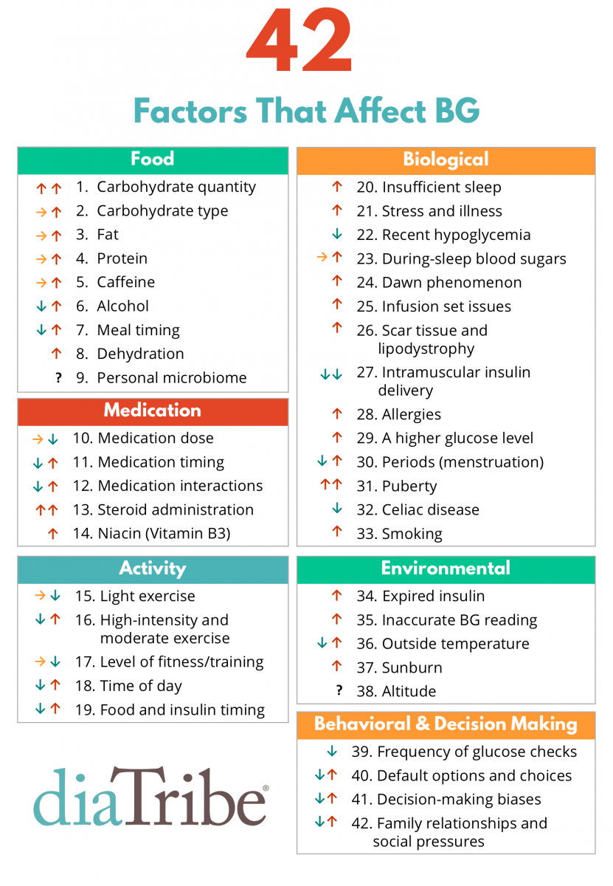

Settings Matter⌁
With all the excitement about automated insulin delivery, there is often one important factor that sometimes gets overlooked by new closed loop users. This is all still a mathematics problem and the inputs matter. Diabetes will not always be a static math equation. What worked for basals, insulin sensitivity, or carb ratios yesterday...well, that might not work today.
Let's explain a little more. When you go to calculate a meal bolus, your math probably looks similar to this:

But then many times you are also probably adjusting that math based on any number of "factors" that you are aware could be affecting your BG. Diatribe put together this great list of factors that affect BGs, and therefore could also affect how you'd adjust your insulin delivery from what they otherwise would normally be.

Some of those factors you are already used to making allowances for, such as:
- Pizza boluses...You probably are accustomed to needing an extended bolus and/or higher temp basal rate to help with the late BG spike common after the initial bolus starts to wear off. That pizza takes a long time to digest thanks to those slow-acting fats.
- Medications...How about that time that you had to take steroids for an achy joint? Those steroids probably resulted in a dramatic overall increase in insulin needs for several days.
- Hormones...monthly hormone cycles have many women adjusting their basal rates and insulin sensitivity schedules for a week or so each month.
- Exercise...always a tough one because some exercise may make your BG rise (lifting weights) and other exercise may make your BG drop (running). Through repetition, most people have learned how to adjust for exercise by using temp basal rates or timing of meals/boluses.
The degree to which Loop can deal with those factors is largely dependent on the duration of the "factor" itself and how well we can communicate to Loop that those factors are at play. For things we know are coming, we can tell Loop in advance, and Loop has ways of dealing with them mathematically. In the pizza example, Loop lets us mark the meal as long, slow digestion and therefore prepare for an potential late BG rise. For exercise, we can use temporary targets before/after exercise to help Loop administer less insulin for awhile.
If however when your insulin needs are impacted by something unnanouced such as horomone cycles, stress, or illness, then sometimes your Loop may not be able to consistently hold you at your target BG range. You may end up holding steady at a higher BG than you'd prefer. This is because Loop's math is still using the inputs that were from before you got sick/stressed/horomone'd (new word). Then the decision becomes "Do you adjust your settings now or just wait it out until the stressor goes away?" The pages for "Stuck on a High BG" and "Going Low" discuss how you might consider the answer to that question.
Loop is primarily a set of math equations called an algorithm. All the recommendations and actions that Loop takes are based on math. If the inputs to those math equations are not very accurate, your results for blood glucose control may also not be optimal. Settings matter. Your basal rates, insulin sensitivity, carb ratio, and duration of insulin action all make a difference to how well your Loop will work for you.
Loop does not automatically detect or understand if you are sick. Loop does not know about the changes in insulin sensitvity from the exercise that you just did. Loop does not know about your hormone cycles.